Твій подарунок відкрито
Твій подарунок відкритоРецепти: “Сніданки”
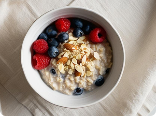
Вівсянка з ягодами
та горіхами
та горіхами
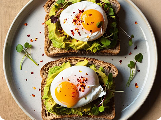
Тост з авокадо
та яйцем пашот
та яйцем пашот
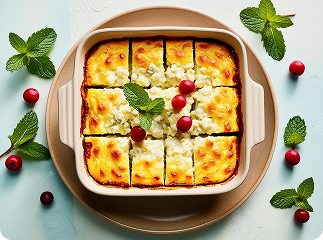
Сирна запіканка
без цукру
без цукру
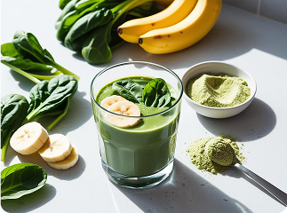
Зелений смузі
з бананом і шпинатом
з бананом і шпинатом
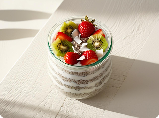
Чіа-пудинг з кокосовим молоком і фруктами
Рецепти: "Обіди"
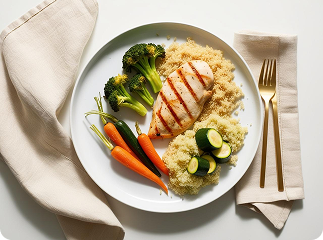
Куряча грудка з кіноа та овочами на пару
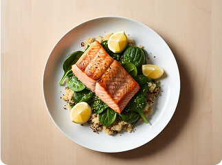
Лосось на грилі з салатом із шпинату та кіноа
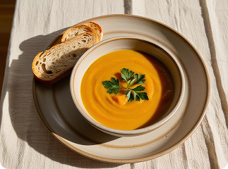
Овочевий суп-пюре
з тостом
з тостом
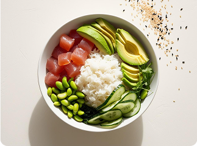
Поке з тунцем, рисом
та овочами
та овочами
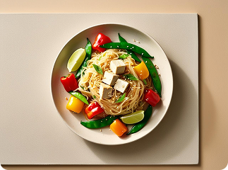
Стир-фрай з тофу та рисовою локшиною
Рецепти: "Вечері"
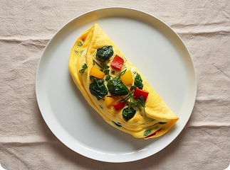
Омлет з зеленню
та овочами
та овочами
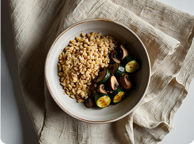
Булгур з грибами
і тушкованими кабачками
і тушкованими кабачками
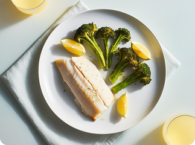
Запечена риба з броколі
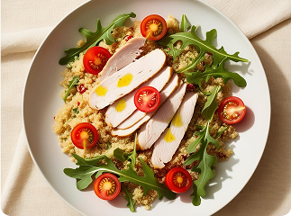
Теплий салат з індичкою та кіноа
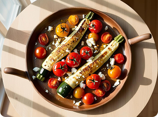
Запечені овочі з фетою
Рецепти: "Солодке"
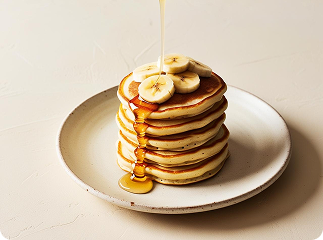
ПП-млинці з бананом
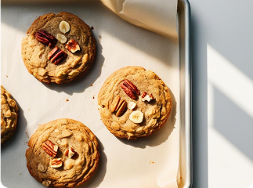
Бананове печиво
з вівсянкою
з вівсянкою
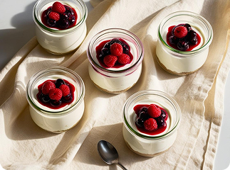
Йогуртовий чізкейк
без випічки
без випічки
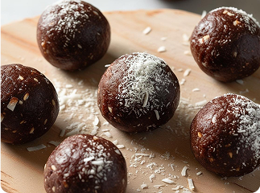
Фінікові цукерки
в кокосі
в кокосі
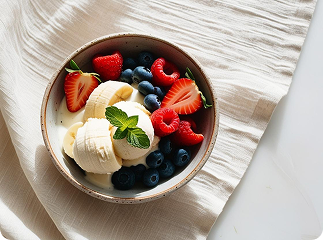
Морозиво з банану
та ягід (Nice Cream)
та ягід (Nice Cream)